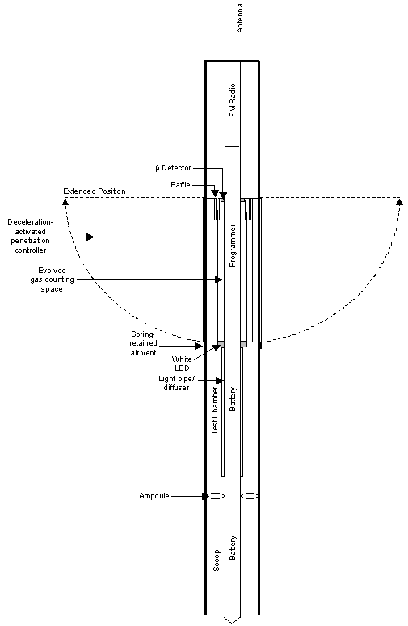
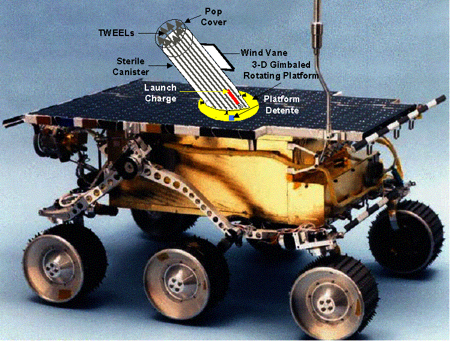

A sterile robotic Mars soil analyzer
ABSTRACT
Since the 1976 Viking Mission to Mars, follow-on efforts to resolve its controversial life detection results have been thwarted by two heretofore insurmountable difficulties: the huge expense of sterilizing the entire spacecraft to protect the integrity of life detection experiments; and the lack of a practical robotic life detection package that could produce results acceptable as unambiguous by the scientific community. We here present a method that assures sterility and the complete integrity of robotic life detection experiments, all at a negligible cost. Second, we propose a candidate set of integrated, highly sensitive experiments that we believe could produce results acceptable to the vast majority of scientists. In addition to the biology-chemistry issue, the extensively debated oxidative state of the Martian surface and other chemical and physical characteristics of the Martian soil would be determined. We present our concept for a miniaturized instrument that could carry out a number of candidate experiments to achieve the objective.
Keywords: Mars soil, Mars life, extraterrestrial life, robotic instruments, Viking mission, spacecraft sterilization, LR experiment
1. INTRODUCTION
Perhaps the most provocative question about Mars is whether life now exists on the planet, or ever existed in the past. Despite the general interest in this question, there have been no further direct attempts to resolve the issue since the twin Viking spacecraft landed three biological experiments seeking metabolic evidence of indigenous microbial life on Mars in 1976. The data obtained from the Viking Labeled Release Experiment (LR) on Mars provided strong evidence for microbial life[1],[2],[3]. However, because the other two biological experiments were negative, and because no organic compounds were detected in the soil by the Viking gas chromatograph mass-spectrometer (GCMS)[4], the biological possibility raised by Levin and Straat cited above, and later the conclusion stated by Levin[5]¾that microbial life had been detected by the LR¾have remained controversial.
It was originally proposed[6] that the positive LR results and the absence of organics can be explained simply by the presence of a strong oxidant on the Martian surface. The theory also accounted for the brief pulse of oxygen evolved from Martian soil exposed only to water vapor in the Viking Gas Exchange (GEx) life detection experiment[7]. Since then, many scientists have proposed a variety of oxidants that might account for the activity detected on the surface of Mars. Levin and Straat[8], on the other hand, were unable to replicate the LR results non-biologically using the prime oxidant candidate, hydrogen peroxide and (Martian) environmentally-produced derivatives therefrom. More recently, additional variations have been published proposing superoxide ions[9] and iron(VI)[10] as the oxidant responsible for the Mars LR results. However, each of these theories has also been found[11],[12] wanting, and a case has been made[13] against the possibility of an oxidizing environment on the surface of Mars.
Over the last quarter century, an independent, overriding barrier to acceptance of the biological interpretation of the LR results, or of any possibility of life, has been the presumed absence of liquid water on the surface of Mars.
Much evidence has been obtained over the intervening years bearing on the above issues, with accelerating rapidity over the last several years. Individually and collectively, the findings support a Mars that bore life forms in the past and, in fact, may support living organisms even now:
1. What most scientists have posed as the sole, absolute barrier to life, the absence of liquid water, is addressed first. After years of supporting the arid Mars declared by Horowitz[14], the extensive literature on the subject has yielded to several recent reports stating that Mars had significant liquid water in its geological past[15],[16] and may have surface water today[17]. Most pertinently, recent results from Odyssey[18],[19],[20] indicate water ice lies only tens of centimeters beneath the surface of wide areas of Mars. Levin[21] points out that the water vapor flux rising to the surface from this ice would obliterate the putative oxidant. This is because the sole “evidence” for the oxidant was its presumed reaction with water vapor to release oxygen in the Viking GEx. However, the new findings from Odyssey strongly confirm prior experimental data that have been presented demonstrating water existing in liquid phase under Martian conditions, and a model accounting for it[22].
2. Meteorites found in Antarctica have provided evidence for the presence of organic matter in Martian surface material in amounts beneath the sensitivity of the Viking GCMS. They have also provided evidence of life forms in the Mars geological past[23],[24],[25]. Interpretation of the features cited as evidence for past life, like the LR data on extant life, is highly controversial[26],[27],[28].
3. The LR data have recently been re-examined from a new point of view[29]. The temperature-related fluctuations in the amount of radioactive gas in the test cell may indicate a possible circadian rhythm superimposed upon a metabolic response.
4. Discovery and study of extremophiles increasingly demonstrates that many terrestrial microbial forms can withstand environmental extremes until recently thought inimical to life. The envelope of temperature, pressure, atmospheric composition, and salinity has been pushed to unanticipated regions[30],[31],[32],[33],[34], including the environment of Mars. These findings make it likely that Martian organisms could be well adapted to the current Martian conditions. They also make it possible that any microbes hitchhiking on a spacecraft to Mars could survive the trip, safely land on Mars and populate the planet[35].
5. Hoover and co-workers have reported[36],[37],[38] microbial fossils in meteorites from Mars and from unknown sources. This has added significantly to evidence for extraterrestrial microorganisms in meteorites reported[39] as early as 1961.
6. A reasonable explanation has been rendered[40] for the failure of the Viking GCMS to detect any organic matter in the Martian soil. A 106 advantage in sensitivity of the LR over the GCMS makes it possible that the GCMS could not sense the small amount of organic matter associated with the low numbers of cells (~50) detectable by the LR.
These data, however, provide only inferential information in support of Levin’s claim[41] that the Viking LR detected living microbes in the soil of Mars. The issue continues to be both provocative and controversial. The best way to resolve it is to return to Mars and address the issue directly. What is needed is a definitive experiment, or set of experiments, that can distinguish, once and for all, between a biological and a non-biological agent. Other critical soil parameters such as pH, the presence of liquid water or water vapor, and the presence or absence of organic material might also be resolved in such a mission.
2. INSTRUMENTATION
The key feature of the robotic soil analyzer is its essential compliance with the stringent COSPAR requirements for life detection experiments, but without requiring sterilization of the entire spacecraft. This solution to the heretofore prohibitive costs of spacecraft sterilization makes life detection experiments feasible, even as “piggy-back add-ons,” to any lander mission.
This economy is accomplished by hermetically sealing the instrument package in a cocoon-like canister. Any experiment that could be designed as a self-contained unit in a small, ejectable probe, “TWEEL” (a mythological Martian bird that plunges into the ground nose-first[42]¾Twin Wireless Extraterrestrial Experiment for Life), can be accommodated. Each TWEEL is sheathed within its own cylindrical case fixed within the canister. Only the small canister and its miniaturized contents are heat-sterilized to COSPAR requirements for life detection experiments. The design target for the canister and contents is 1.5 kg with a volume of 1000 cc. Prior to launch of the spacecraft towards Mars, the canister is attached to its platform on the lander rover, being subjected to whatever cleansing is administered to the entire spacecraft. The canister insulates the package from the rigors of space travel. After the spacecraft lands on Mars, the rover is deployed to the desired sampling area. A detent then releases the canister platform, freeing it to rotate in response to the wind and for its elevation to be adjusted. This positions the canister to launch the TWEELs into the wind to follow the desired trajectory. Squibs then eject the TWEELs far enough upwind from the spacecraft to land beyond any terrestrial contaminants possibly carried and deposited by the spacecraft. The TWEELs are aerodynamically designed so that their noses impact first, thereby obtaining soil samples in the two scoops of each TWEEL. The samples excavated by the TWEELs are thus pristine. The depth of penetration of the TWEEL is controlled by flanges that deploy upon impact of the nose.
The TWEELs are launched by breaking through scored areas above them in the canister. Launches may be initiated simultaneously or individually as desired. The latter choice allows the rover to move to different sampling areas, exercising caution to preclude any downwind sampling. Each TWEEL contains two small batteries that can supply up to 11 watt hr, adequate for the experiment and for two-way radio communication with the lander over the maximum nominal lifetime of 20 days.
An individual TWEEL containing an experiment is diagrammed in Figure 1. Figure 2 shows the instrument canister and how it would be mounted for deployment on a rover.
3. CANDIDATE EXPERIMENTS
The container is designed to house a wide variety of suitable experiments to investigate the Martian soil. The instruments for such experiments would have to be designed to comply with the weight, space and supportive capabilities of the container. The authors propose a candidate list of experiments.
3.1 Determination of water phase
The potential for biology and the chemistry of the surface material of Mars depends on the presence and phase of water. A temperature sensor in a TWEEL can monitor the daily temperature range. Pathfinder’s finding[43] of significantly higher temperatures at the surface of Mars than were measured only a meter above it makes the TWEEL especially useful for this measurement. Coupled with the monitoring of atmospheric pressure that landers perform, the physical state of water, were it present at the TWEEL landing site, can readily be determined. The global position of the TWEEL can then be referred to the Odyssey findings to determine whether hydrogen, presumably in the form of water, exists near the surface. The presence of liquid water or the flux of water vapor from below may thus be determined at the TWEEL site.
3.2 Determination of pH
A miniaturized pH meter can be included in a TWEEL that might be dedicated to other purposes, perhaps a biology/chemistry TWEEL. Should liquid water be present at the site, the pH of the soil will be determined. However, because ambient water is unlikely to be present in amounts needed to determine the pH, an ampoule of water is included in the TWEEL. The ampoule breaks when the TWEEL enters the soil, releasing enough water to enable the measurement. The TWEEL would be launched at the time of day when the ambient environment is best able to sustain water in liquid form.
3.3 Tests for Biology or Oxidant
3.3.1 Chiral LR
Under Ambient Conditions
Chemical reactions in nature do not discriminate between stereoiosomers of the same compound, but terrestrial biology invariably does. The Viking LR 14C-labeled substrates, shown in Table 1, would be included as nutrient ampoules in the TWEEL of Figure 1. However, the opposite stereoisomers of the alanine and lactate would be separated in respective ampoules within the two sample chambers. The ampoules would be broken by the force of the incoming sample as the TWEEL penetrates the Martian surface. The soil and nutrients would mix. Evolved labeled gas from each sample chamber would be monitored for a period of ten days. Should both chambers react equally, the most likely interpretation would be that a chemical agent was responsible. Should there be no reaction, this would establish the environment as non-oxidizing. Should one of the chambers produce a response, but not the other, or should the responses differ significantly, biology would be indicated. Further, if the chiral preference differed from the terrestrial preference, this could indicate a fundamentally different life form, which would be a profound discovery.
TABLE 1
VIKING LABELED
RELEASE SUBSTRATES
|
|
|
|
|
Specific Activity (Ci/Mole) |
|
14C-glycine |
NH2*CH2*COOH |
2.5 |
4 |
16 |
|
14C-DL-alanine |
*CH3*CH (NH2)*COOH |
5.0 |
12 |
48 |
|
14C-sodium formate |
H*COONa |
2.5 |
2 |
8 |
|
14C-DL-sodium lactate |
*CH3*CHOH*COONa |
5.0 |
12 |
48 |
|
14C-calcium glycolate |
(*CH2OH*COO)2Ca |
2.5 |
4 |
16 |
3.3.2 Cysteine as a
Biology-Chemistry Discriminator
The Martian surface material contains[44] one to two orders of magnitude more sulfur than the surface of Earth. Should the oxidant theories on Mars be correct, all the sulfur would be present as sulfate. Any reduced sulfur compounds exposed to those conditions would rapidly be oxidized. Cysteine is an essential amino acid in all known biology, and is in a reduced state. This makes it an especially good substrate to test for both chemistry and biology. The same experiment as the chiral LR described immediately above would be run, except that 14C-L- or D‑cysteine would constitute the sole test nutrient in each chamber of the TWEEL. Equal responses from both isomers, over the ten-day monitoring period, would support a chemical oxidant as the active agent in the soil. As with the LR TWEEL, any significant discrimination between the two isomers would be strong evidence for biology. Also, the nature of the discrimination could establish the first comparative biology between Earth and Mars life forms. No response from either TWEEL would strongly argue against an oxidant in the soil.
FIGURE 1
TWEEL EQUIPPED FOR
LR/CIRCADIAN RHYTHM/PHOTOSYNTHESIS EXPERIMENT

FIGURE 2
CANISTER MOUNTED ON
ROVER

3.4 Circadian
Rhythm/Photosynthesis
All known organisms exhibit circadian rhythms (entrained by the Earth’s daily cycle of approximately 24 hours) in their metabolism, thus providing an ubiquitous biomarker. The molecular substrates of the circadian timekeeping system have been elucidated in mammals, fruit flies, sea slugs and even cyanobacteria. While the most potent terrestrial stimulus capable of entraining these rhythms is the 24 hr light/dark cycle, a variety of other agents (temperature, nutrient availability, voluntary locomotor activity) induce entraining effects, although weaker. Evolutionary considerations suggest that an endogenous clock, with a period similar to the rotational period of the planet of origin, may be strongly selected in environments in which life evolves. This in turn reflects the importance to the organism of detecting “time of day”, e.g., normally diurnal animals awake at night would be at much greater risk of predation, and heliotropism would be of no value to a plant at night. Furthermore, since the amount of daylight may be obscured by meteorological or environmental factors (e.g., burrowing animals spend most of the day underground), there appears to have been strong selection pressure for the evolution of an endogenous circadian clock capable of “keeping time” even under such circumstances.
A case has been made[45] that the Viking LR experiment may have exhibited circadian rhythms of microorganisms entrained to a remnant temperature cycle (2 degree C amplitude), as evidenced by rhythmic oscillations in their evolution of radioactive gas in the lander that, in turn, reflected the ambient daily temperature cycle. However, confirmation and extension of the relatively small database supporting this possibility is desired. It is proposed to dedicate a TWEEL to determine whether or not the signal from an LR type experiment exhibits circadian rhythmicity, and, if so, to examine its characteristics over time. The TWEEL will also attempt to determine whether photosynthesis occurs in the test soil sample. The experimental chamber will be entirely light-tight and shielded from the Martian light/dark cycle.
After the TWEEL lands and activates, a five-day baseline period is obtained for background. Then a photic stimulus, in the form of bright white light from a miniature LED transmitted through the sample by a light pipe diffuser, will be presented to the sample in one chamber for one hour beginning approximately two hours after local sundown. This potentially-entraining stimulus will be presented each sol for five consecutive sols, but at intervals of 26 hr, as opposed to the 24.66 hr Martian daily period. In the other chamber of the TWEEL, the same light stimulus will be presented, but only once every ten hours. After the first five sols, no further light will be applied to either chamber. The 14C gas evolved in the experiment will then be monitored for an additional ten days.
Since light is the most potent terrestrial entraining stimulus, the expectation is that some sub-population of temperature-entrained microorganisms will “break away” from the temperature zeitgeber and entrain to the daily 26 hr light presentations. Thus a second circadian rhythm should appear in the metabolic record obtained by monitoring the evolved 14C gas. If so, this rhythm should be out of phase with the temperature-entrained rhythm, and should exhibit a period of 26 hr, rather than the Martian 24.66 hr natural cycle.
The expectation for biologically-mediated circadian rhythms is that such rhythms should entrain to the 26 hr photic cycle, but not to the ten hr cycle. In contrast, if any non-biological mechanism becomes synchronized to the photic stimulus, the period of application should not matter. Ten-hour entrainment would be expected in this case. In addition, in the case of biology, the photically-entrained rhythm should persist for at least some cycles in the absence of stimulation during the final ten days of the experiment (essentially a free run of the photically-entrained component).
The observation of photic entrainment of gas release with a period of 26 hr, followed by a free-running rhythm, would constitute excellent evidence for a biological process. Furthermore, failure of entrainment to a ten hr light cycle would be a precise analog of terrestrial circadian biology. Additionally, should the headspace gas in the test chamber diminish when the light is turned on and increase when the light is off, that would be evidence for photosynthesis in the life forms detected.
4. CONCLUSION
The instrument and candidate experiments proposed offer a simple, low-cost and convenient way to perform key analyses of Martian soil that presently remain undetermined. They also provide a way to resolve whether the considerable activity detected in the Martian soil 26 years ago is chemical or biological in nature. The later determination is essential to, and would have major impact on plans to send men to Mars, or to bring Martian soil samples to Earth. Furthermore, should microbial life be found, the approach presented herein allows for increasingly specific follow-on experiments to delineate the characteristics of that life, and, in particular, to determine whether or not it poses any threat to our life forms or environment. Finally, it opens the door to an orderly scientific study of the new biology, including its detailed comparison with our own.
ACKNOWLEDGEMENTS
The limitless and indispensable effort of Mrs. Kathy Brailer in preparing and proofing the many iterations of this paper are gratefully acknowledged.
REFERENCES
* glevin@spherix.com; phone 301-419-3900;
fax 301-210-4908; http://www.spherix.com;
Spherix Incorporated, 12051 Indian Creek Court, Beltsville, MD, USA 20705
** jdm@usc.edu;
phone 323-442-1629; fax 323-442-3466; University of Southern California, School
of Medicine, Cellular and Neurobiology Department, 1333 San Pablo Street, BMT
401, Los Angeles, CA 90084
*** pstraat@starpower.net; phone
410-442-1582; fax 410-992-8429; 830 Windy Knoll, Sykesville, MD 21784
**** richard.hoover@msfc.nasa.gov;
phone 256-544-7617; fax 256-544-5956; NASA, Marshall Space Flight Center, Mail
Code ES82, Huntsville, AL 35812
[1]. Levin, G.V. and Straat, P.A., “Viking labeled release
biology experiment: interim results,” Science 194, 1322-1329,
1976.
[2]. Levin, G.V. and Straat, P.A., “Recent results from the
Viking labeled release experiment on Mars,” J. Geophys. Res. 82,
4663-4667, 1977.
[3]. Levin, G.V. and P.A. Straat, “A Reappraisal of Life on
Mars,” The NASA Mars Conference, Science
and Technology Series 71,
186-210, 1988.
[4]. Biemann, K., J. Oro, P. Toulmin III, L.E. Orgel, A.O. Nier,
D.M. Anderson, P.G. Simmonds, D. Flory, A.V. Diaz, D.R. Rushneck, J.E. Biller
and A.L. Lafleur, “The Search for Organic Substances and Inorganic Volatile
Compounds in the Surface of Mars,” J.
Geophys. Res., 82, 4641-4658,
1977.
[5]. Levin, G.V., “The Viking Labeled Release Experiment and Life
on Mars,” Instruments, Methods, and Missions for the Investigation of
Extraterrestrial Microorganisms, SPIE Proceedings 3111, 146-161, 1997.
[6]. Oro, J. Presentation to Viking Science Team, JPL, Pasadena,
CA, August 1, 1976.
[7]. Oyama, V.I. and B.J. Berdahl, “The Viking Gas Exchange
Experiment Results from Chryse and Utopia Surface Samples,” J. Geophys. Res. 82, 4669-4676,
1977.
[8]. Levin, G.V. and Straat, P.A., “A search for a nonbiological
explanation of the Viking labeled release life detection experiment,” Icarus
45, 494-516, 1981.
[9]. Yen, A.S., Kim, S.S., Hecht, M.H., Frant, M.S., and Murray,
B., “Evidence that the reactivity of the Martian soil is due to superoxide
ions,” Science 289, 1909-1911, 2000.
[10]. Tsapin A.I., M.G. Goldfeld, G.D. McDonald, and K.H. Nealson,
“Iron (VI): Hypothetical Candidate for the Martian Oxidant,” Icarus 147, 68-78, 2000.
[11]. Levin, G.V., Technical Comment: “O2ˉ Ions and the Mars Labeled Release Response,”
Science 291, 2041a, March 16, 2001.
[12]. Levin, G.V., Note: “Iron (VI) Seems Unlikely Explanation for
Viking Labeled Release Results,” Icarus, in press.
[13]. Levin, G., “The Oxides of Mars,” Instruments, Methods, and
Missions for Astrobiology, SPIE
Proceedings 4495, 131-135, 2001.
[14]. Horowitz, N.H., To Utopia and Back, The Search for Life in
the Solar System,” W.H. Freeman and Co., 1986.
[15]. Kerr, R.A., “A dripping wet early Mars emerging from new
pictures,” Science 290, 1879-1880, 2000.
[16]. Kerr, R.A., “Making a splash with a hint of Mars water,” Science
288, 2295–2297, 2000.
[17]. R.M. Haberle, C.P. McKay,
J. Schaeffer, M. Joshi, N.A. Cabrol, and E.A. Grin, “Meteorological Control on the Formation of
Martian Paleolakes”, Proc. Lunar
and Planetary Science XXXI,
1509.pdf, 2000.
[18]. Feldman, W.C. et al., “Global Distribution of Neutrons
from Mars: Results from Mars Odyssey,” Science 297, 75-78, 2002.
[19]. Mitrofanov, I. et al., “Maps of Subsurface Hydrogen
from the High-Energy Neutron Detector, Mars Odyssey,” Science 297,
78-81, 2002.
[20]. Boynton, W.V. et al., “Distribution of Hydrogen in the
Near-Surface of Mars: Evidence for
Subsurface Ice Deposits,” Science 297, 81-85, 2002.
[21]. Levin, G.V., “Odyssey Data on Water; Implications for Life on
Mars,” submitted for publication, 2002.
[22]. Levin, G.V. and R.L. Levin, “Liquid Water and Life on Mars,” Instruments, Methods, and Missions for
Astrobiology, SPIE Proceedings
3441, 30-41, July, 1998.
[23]. McKay, D.S., E.K. Gibson, K.L. Thomas-Keptra, H. Vali, S.
Romanek, S.J. Clemett, X.D.F. Chillier, C.R. Maechling, and N. Zare, “Search
for Past Life on Mars: Possible Relic
Biogenic Activity in Martian Meteorite ALH84001,” Science, 273, 924-930,
1996.
[24]. Thomas-Keptra, K.L. et
al., “Truncated hexa-octahedral magnetite crystals in
ALH84001: Presumptive biosignatures,” Proc. Natl. Acad. Sci. USA 98,
5, 2164-2169, 2001.
[25]. Thomas-Keprta, K. et al., “Elongated prismatic
magnetite crystals in ALH84001 carbonate globules: Potential Martian magnetofossils,” Geochimica et Cosmochimica
Acta 64, 23, 4049-4081, 2000.
[26]. Kerr, R.A., “Putative Martian microbes called microscopy
artifacts,” Science 278 (5344), 1706-1707, 1997.
[27]. McSween, H.Y., and R.P. Harvey, “An evaporation model for
formation of carbonates in the ALH84001 Martian meteorite,” International
Geology Review 40 (9), 774-783, 1998.
[28]. Jull, A.J.T., C. Courtney, D.A. Jeffrey, and J.W. Beck,
“Isotopic evidence for a terrestrial source of organic compounds found in
Martian meteorites Allan Hills 84001 and Elephant Moraine 79001,” Science
279 (5349), 366-369, 1998.
[29]. Miller, J.D, P.A. Straat, and G.V. Levin, “Periodic Analysis
of the Viking Lander Labeled Release Experiment,” Instruments, Methods, and Missions for Astrobiology, SPIE Proceedings 4495,
96-107, July 2001.
[30]. Thomas, D.N. and Dieckmann, G.S., “Antarctic sea ice – a
habitat for extremophiles,” Science 295, 641-644, 2002.
[31]. E.J. Carpenter, S. Lin, and D.G. Capone, “Bacterial Activity
in South Pole Snow,” Applied and Environmental Microbiology 66,
10, 4514-4517, 2000.
[32]. R.H. Vreeland, W.D. Rosenweig, and D.W. Powers, “Isolation of
a 250 million-year-old halotolerant bacterium from a primary salt crystal,” Nature
407, 897-900, 2000.
[33]. E.M. Rivkina, E.I. Friedmann, C.P. McKay, and D.A. Gilichinsky,
“Metabolic Activity of Permafrost Bacteria Below the Freezing Point,” Applied
and Environmental Microbiology 66, 8, 3230-3233, 2000.
[34]. M.L. Skidmore, J.M. Foght, M.J. Sharp, “Microbial Life Beneath
a High Arctic Glacier,” Applied and Environmental Microbiology 66,
8, 3214-3220, 2000.
[35]. Levin, G., “Scientific Logic for Life on Mars,” Instruments, Methods, and Missions for
Astrobiology, SPIE Proceedings
4495, 81-88, July 2001.
[36]. Hoover, R.B. “Meteorites, Microfossils, and Exobiology,” Instruments, Methods, and Missions for
the Investigation of Extraterrestrial Microorganisms, SPIE Proceedings
3111, 115-136, 1997.
[37]. Hoover, R.B., A.Y. Rozanov, S.I. Zhmu, and V.M. Gorlenko,
“Further Evidence of Microfossils in Carbonaceous Chondrites,” Instruments, Methods, and Missions for
Astrobiology, SPIE Proceedings
3441, 203-216, July 1998.
[38]. Rozanov, A.Y., E.A. Zhegallo, G.T. Ushatinskaya, Y.V.
Shuvalova, and R.B. Hoover, “Bacterial Paleontology for Astrobiology,” Instruments, Methods, and Missions for Astrobiology, SPIE Proceedings 4495,
283-294, July 2001.
[39]. Nagy, B., W.G. Meinschein, and D.J. Hennessey, “Mass
spectroscopic analysis of the Orgueil meteorite: Evidence for biogenic
hydrocarbons,” Ann. N.Y. Acad. Sci. 93(2), 25-35, 1961.
[40]. Levin, G., L. Kuznetz, and A. Lafleur, “Approaches to
Resolving the Question of Life on Mars,” Instruments,
Methods, and Missions for Astrobiology,
SPIE Proceedings, 4137,
48-62, August 2000.
[41]. Op cit. 5.
[42]. Weinbaum, S.G., A Martian Odyssey and Other Science Fiction
Tales, Hyperion Press, June 1974.
[43]. Schofield, J.T. et al., “The Mars Pathfinder
Atmospheric Structure Investigation/Meteorology (ASI/MET) Experiment,” Science
28, 1752-1758, 1997.
[44]. Toulmin, P. III et al., “Geochemical and Mineralogical
Interpretation of the Viking Inorganic Chemical Results,” J. Geophys. Res.
82, 4625, 1977.
[45]. Op cit. 29.